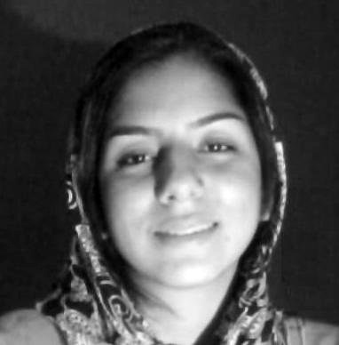

پذيرش > تریبون > مقالات > مهاجرت، انتخابی که «جبر زمانه» نبود!/ ستاره هاشمی


 مهاجرت، انتخابی که «جبر زمانه» نبود!/ ستاره هاشمی مهاجرت، انتخابی که «جبر زمانه» نبود!/ ستاره هاشمی
7 اردیبهشت 1389 - - نسخه قابل چاپ
تغییربرای برابری - تردید میان ماندن و رفتن حکایت تازه ای نیست. در گیرودار آشفتگی های تاریخ معاصر بسیاری بوده اند که راه ترک وطن را برگزیده اند و این چنین پناهی جستند برای درماندگی از وضعیت معمولا نامساعد داخلی و استبدادی که هر از گاهی جان را به لب می رساند. پس از انقلاب 57 با افزایش فشارهای اجتماعی، شدت گرفتن حذف مخالفین و همین طور آغاز جنگ مهاجرت ابعاد وسیع تری یافت و در همه این سال ها کم و بیش ادامه داشته است. این آمد و رفت ها بسته به زمانشان نتایج متفاوتی در پی داشته اند.
در چند ماهه ی اخیر، یعنی درست پس از انتخابات خرداد ماه 88، جریان دیگری از مهاجرت آغاز شده که در نوع خود بی سابقه است. به هر سو که می نگری یار و همراهی را می بینی که بار سفر می بندد یا به آن می اندیشد. بخش عمده ی این مهاجرین را کسانی تشکیل می دهند که زندگی در شرایط پس از انتخابات را غیرقابل تحمل می پندارند و البته تعداد زیادی از فعالین سیاسی و اجتماعی که در این مدت فشارهای زیادی را متحمل شده اند نیز از این جمله اند.
پیگیری اهداف معین سیاسی در خارج از کشور از سوی اپوزیسیون در تبعید تجربه ی متداولی در بسیاری از کشورهای جهان است. در حالی که کنش اجتماعی طی روندی اجتماعی شکل می گیرد و هدایت آن از خارج از کشور دشوار می نماید. مسلم است که مهاجرت فعالین اجتماعی در آینده جنبش های اجتماعی تاثیرگذار خواهد بود با این حال شیوه عمل این مهاجرین نیز در چگونگی این تاثیر تعیین کننده است.
از آن جا که فضای به شدت امنیتی و بازداشت های متعدد نیمه جان جامعه مدنی را تهدید می کند، اگر مهاجرت بازماندگان این نیروها - یعنی آنهایی که خارج از زندان به سر می برند- به ریزش و کناره گرفتن آنان از فعالیت منجر شود عملا به کاهش کارآمدی جنبش های اجتماعی خواهد انجامید. حداقل به این دلیل که با کمبود سرمایه انسانی مواجه خواهند شد.
اما در صورتی که این فعالین در خارج از ایران به فعالیت خود با ماهیت پیشین ادامه دهند - مثلا فعال جنبش دانشجویی همچنان پیگیر مطالبات خاص و کلان دانشجویان ایرانی باشد- به عنوان یک کنشگر اجتماعی به شدت آسیب پذیر خواهند بود. چرا که چنین فعالیتی مشخصا در بستر اجتماعی خود معنی پیدا می کند و بیم آن می رود که مطالباتی که بیش از هر چیز روحی اجتماعی دارند به کالبد بی جانی بدل شوند که با روان خود بیگانه است. اگرچه رهایی از تیغ سانسور و سرکوب به بیان خواسته ها کمک بسیاری می کند اما نمی تواند به آنها هویت بخشد.
در این میان جنبش زنان بیشتر در معرض این آسیب قرار دارد. زیرا به لحاظ ماهیت خواسته ها و به تبع آن شکل و روش فعالیتش نیازمند ارتباطی ارگانیک با بدنه جامعه است. از آن جا که موضوع اصلی مطالبات این جنبش زندگی روزمره زنان است، گسترش و تعمیق آنها جز در فضای عمومی جامعه امکان پذیر نیست. با وجود اینکه شرایط امنیتی حاکم امکان بسط این مطالبات به شیوه های پیشین - مانند روش گفتگوی چهره به چهره در کمپین یک میلیون امضا- را با مانع رو به رو ساخته اما مهاجرت کنشگران جنبش زنان بیش از پیش از کارایی آن خواهد کاست. از طرف دیگر سهم بالقوه برابر هر یک از فعالین در این جنبش سبب می شود که مهاجرت آنان تاثیر فراگیری داشته باشد.
اما آنچه به مراتب خطرناک تر است گرفتار شدن فعالین سیاسی و اجتماعی مهاجر در اختلافات و درگیری های متداول و دچار شدن به نوعی انفعال است. تلاش در جهت حفظ ارتباط با واقعیت و پیوند دائمی با آن تنها راه خروج از چنین بحرانی است.
باید در نظر داشت که ضعف نهادهای مترقی جامعه مدنی مشخصا در سرنوشت جنبش دموکراسی خواهی مردم ایران تاثیرگذار خواهد بود. زیرا جنبش های مدنی در ارائه راهبرد های عقلانی به جامعه اهمیت بسیاری دارند و می توانند در تثبیت روش های بی خشونت ایفای نقش کنند. مضاف بر اینکه مهاجرت پی در پی فعالین شناخته شده سیاسی و اجتماعی به رنگ باختن امید به مبارزه و تغییر در میان مردم می انجامد.
این تاثیرات به مهاجرت کنشگران مدنی یا فعالین سیاسی منحصر نمی شود بلکه به طور کلی مهاجرت افرادی که به هر نوعی منتقد وضعیت موجودند و از آن ناراضی اند هم اثرگذار خواهد بود. هر سال میزان زیادی از سرمایه و نیروی حاکمیت صرف اجرای پروژه های یکسان سازی – به عنوان مثال مبارزه با بدحجابی- می شود و تلاش مردم برای حفظ شیوه های خاص زندگی خود در این روند اختلال ایجاد می کند. ماندن در ایران و متفاوت بودن از الگوهایی که پیروی از آن ها به جامعه تحمیل می شود شکلی از مبارزه است. با افزایش مهاجرت میزان نیرویی که باید صرف کنترل گروه بی شماری شود بر عده ی به مراتب کمتری متمرکز خواهد شد و امکان کامیابی اش افزایش خواهد یافت.
البته نباید از نظر دور داشت که مهاجرین - به خصوص آنان که در ماه ها و حتی سال های اخیر مهاجرت کرده اند- در ارائه تصویری واقعی از جامعه ایران و شناساندن جنبش های مدنی به دنیا ایفای نقش کرده و بعضی اوقات که فضای هر نقد و گفتی در داخل بسته بوده سخن مردم ایران را به گوش جهانیان فریاد کرده اند. از طرف دیگر گستردگی ارتباطات امکان نزدیکی با وقایع ایران را فراهم کرده است. با این حال قضاوت منصفانه در این مورد نیاز به گذر زمان دارد.
بنابرین مهاجرت مانند هر پدیده اجتماعی دیگر ممکن است در کنار آسیب هایش دربرگیرنده فرصت هایی نیز باشد. اما آنچه فراتر از مساله مهاجرت است نگاه رایج این روزهاست که به این پدیده رنگی از قداست می دهد. قهرمان سازی از انسان های واقعی اشتباه بزرگی است اما معکوس کردن این اسطوره ها نیز به همان اندازه آسیب زننده است. ارزش گذاری مظلومیت و سخیف شمردن مقاومت ایجاد رکود و ایستایی توان فرسایی در جامعه خواهد کرد. به ویژه اگر مهاجرت را به صورت وضعیتی تراژیک متصور شویم ترویج و توصیه آن چندان موجه به نظر نمی آید.
ماندن در ایران یا خروج از آن در نهایت تصمیمی شخصی است و بار ارزشی مطلقی ندارد. اینکه افرادی به دلیل فشارهای موجود تصمیم به خروج از کشور می گیرند قابل درک است اما آنچه بیشتر به چشم می آید متعارف پنداشتن این تصمیم به عنوان راهی اجتناب ناپذیر است. ترک ایران یک انتخاب است و عنوان «ناچاری» به این انتخاب دادن انکار مسئولیت ما در قبال پیامد عمل ماست. انکار حقیقت آزادی ماست در این انتخاب.
ارسال به
بالاترین
،
توییتر
،
فریندفید
،
فیسبوک
در همين بخش :
 دهمین دورۀ مراسم تندیس صدیقه دولت آبادی ۱۳۹۲ دهمین دورۀ مراسم تندیس صدیقه دولت آبادی ۱۳۹۲
کارت پستالهایی به بهانهی هشت مارس و به یاد همهی مبارزین راه برابری
بیانیه بیش از 350 تن از مدافعان حقوق زنان به مناسبت روز جهانی زن؛ زنان هر روز فرودستتر میشوند
لباسی که برای تن ما دوخته اند! /اعظم بهرامی
چالشها و چشمانداز فعالیت مدنی زنان
ديگر بخش ها :
طرح یک میلیون امضا
|
مقالات
|
سایت نوشته ها
|
اخبار
|
گزارش كمپين
|
گفت و گو
|
علیه سکوت
|
كوچه به كوچه
|
نامه های شما
|
گزارش ویژه
|
گفتگو با اعضا
|
ویژه سالگرد کمپین
|
تصویر برابری
|
دل آرام علی
|
تریبون
|
مقالات
|
تاریخ شفاهی
|
خارج از چارچوب
|
کتابخانه
|
درباره کمپین
|
کمپین در شهرها
|
کمپین در بند
|
صدای تغییر
|
ویژه 22 خرداد
|
لایحه حمایت از خانواده
|
گالری
|
عشا مومنی
|
امیر یعقوبعلی
|
خدیجه مقدم
|
راحله عسگری زاده و نسیم خسروی
|
پروین اردلان،جلوه جواهری، مریم حسین خواه، ناهید کشاورز
|
زینب پیغمبرزاده
|
سعیده امین، سارا ایمانیان، محبوبه حسین زاده، ناهید کشاورز و همایون نامی
|
احترام شادفر
|
نسیم سرابندی زاده،فاطمه دهدشتی
|
وبلاگ مهمان
|
پرونده خرم آباد
|
دستگیری ها
|
مریم مالک
|
پرستو اللهیاری
|
مهرنوش اعتمادی
|
سمیه رشیدی
|
Other Languages
|
همراهان
|
«فراخوان کمپین ده روز با بهاره هدایت»
| English
|